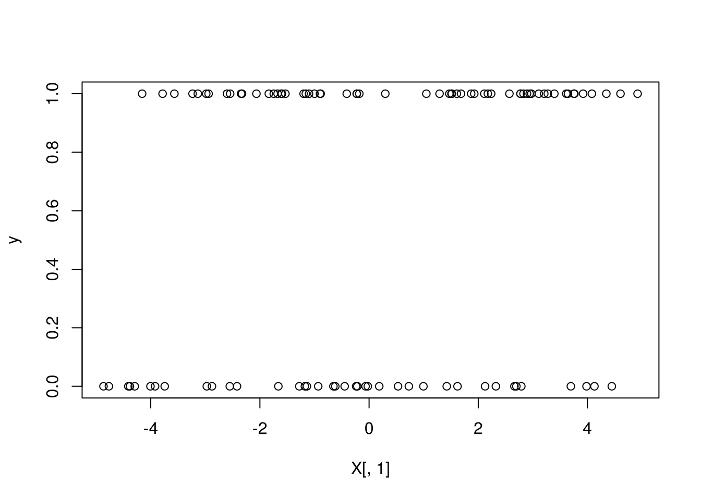
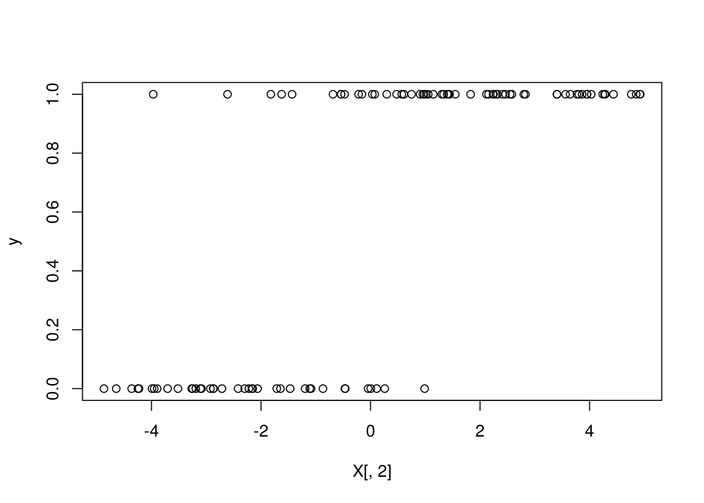
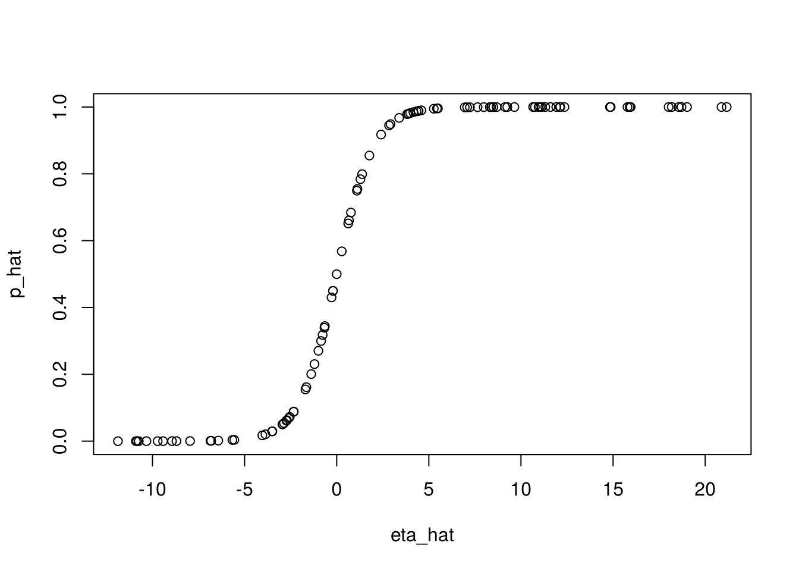
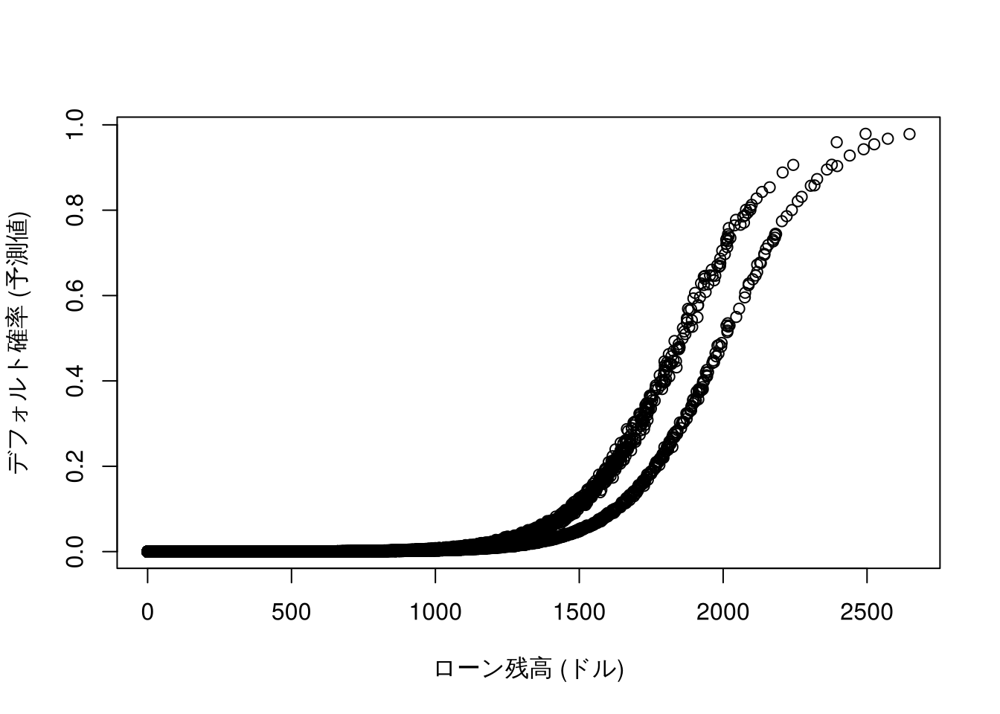
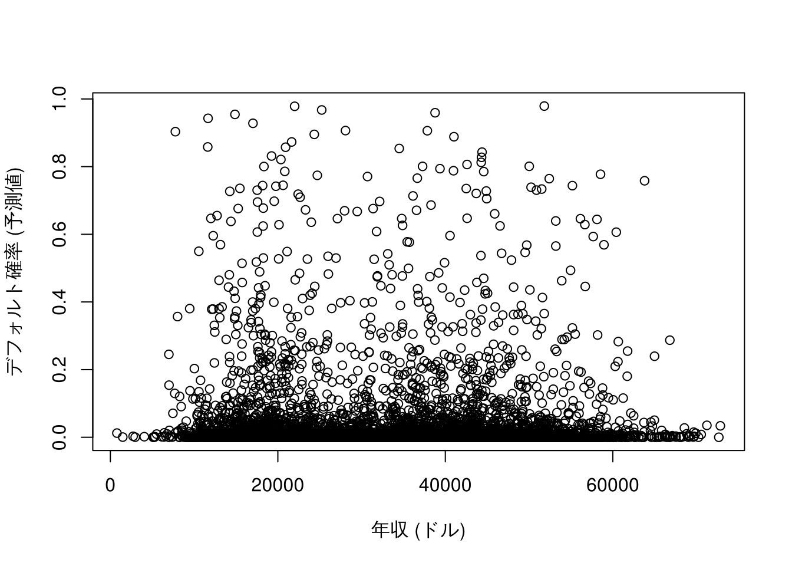

7 ロジット/プロビット回帰分析
第4回の授業では, ロジット回帰の考え方 (2値データに対する回帰, ロジスティック変換, オッズ比) を学び,
R演習スクリプト R_logit_dist.R を使って, glm() による分析を行った.
本章は, この R 演習スクリプトに対応する. 使用するデータは, いずれも授業用に作成した仮想データである.
7.1 ロジット回帰分析の基本操作
ロジットモデル: シミュレーションデータ
基本操作を確認するため,
ロジット回帰モデルが想定するデータ生成メカニズムに従って, 人工データを生成する.
その後, このデータを使って, ロジット回帰分析を行う関数glm()を実行し,
真の係数の値が推定できることを確認する.
シミュレーションデータの生成
set.seed(1)
n <- 100
p <- 2
a <- 1.2
b <- c(0.5, 1.5) # 真の切片と係数
X <- matrix(runif(n * p, -5, 5), ncol = p) # 予測変数 (X1, X2)
colnames(X) <- paste0("X", 1:p)
eta <- a + X %*% b # 線形予測子
prob <- exp(eta)/(1 + exp(eta)) # ロジスティック変換 → 発生確率
y <- rbinom(n, 1, prob) # 0/1 の発生 (ランダム)
plot(X[, 1], y)

ロジット回帰分析の実行
ロジット回帰分析は, R関数glm()を用いて実行することができる.
glm()は標準パッケージstatsに含まれているため,
あらたなインストール作業は不要である.
glm()を用いた分析の操作手順や出力結果の読み方は,
おおむねlm()を踏襲すれば良い.
glm()に与えるモデル式 (引数formula) の書き方は
lm()と同様である. それに加えて, glm()では,
引数familyによって, 目的変数が従うと想定する確率分布を指定する.
ロジット回帰/プロビット回帰では, binomial (二項分布) を指定する.
また, lm()と同様に, glm()の出力結果に対して
summary()関数を適用することで, 推定結果が出力される.
# ロジット回帰
res_glm <- glm(y ~ X, family = binomial)
summary(res_glm) # 推定値を真の値 (1.2, 0.5, 1.5) と比べよ
#>
#> Call:
#> glm(formula = y ~ X, family = binomial)
#>
#> Coefficients:
#> Estimate Std. Error z value Pr(>|z|)
#> (Intercept) 2.5815 0.8647 2.985 0.002831 **
#> XX1 1.1494 0.3434 3.347 0.000818 ***
#> XX2 2.7630 0.7509 3.680 0.000233 ***
#> ---
#> Signif. codes: 0 '***' 0.001 '**' 0.01 '*' 0.05 '.' 0.1 ' ' 1
#>
#> (Dispersion parameter for binomial family taken to be 1)
#>
#> Null deviance: 133.750 on 99 degrees of freedom
#> Residual deviance: 34.478 on 97 degrees of freedom
#> AIC: 40.478
#>
#> Number of Fisher Scoring iterations: 8summary()の出力結果のlm()との主な違いは,
個別の回帰係数の有意性を見る指標が,
lm()では\(t\)値であったところが glm()では\(z\)値になっている点
(それに伴い, 付随する\(p\)値の表記も変化),
および, 全体の当てはまりの指標について,
lm()のように\(R^2\), 補正\(R^2\)の値が表示されておらず,
その代わりに, “Null deviance” (切片のみのモデルの逸脱度), “Residual deviance” (残差逸脱度) が表示されている点である.
(内挿) 予測
glm()の出力結果を関数predict()に与えることで,
内挿予測 (適合値の算出) を行うことができる.
注意点として, 引数typeを指定しない場合 (デフォルト設定) には,
“線形予測子”\(\eta=\beta_0 + \beta_1 x_1 + \cdots + \beta_k x_k\)の予測値が出力される.
ロジット回帰では, これは対数オッズである.
関数predict():
- 予測値を返す関数
- 引数typeの選択肢: "link"(デフォルト), "response", "terms"
- "link": 線形予測子のスケールにおける予測
- "response": 目的変数のスケールにおける予測 (ロジット回帰では確率)
- "terms": 線形予測子のスケールにおける, モデル式の各項の適合値を格納した行列を返すロジット回帰において, 確率の予測を得たい場合には,
type = "response"と指定する必要がある.
# 予測 (内挿)
eta_hat <- predict(res_glm) # 対数オッズ (線形予測子)
p_hat <- predict(res_glm, type = "response") # 確率
head(data.frame(y, p_hat))
#> y p_hat
#> 1 1 0.9846543
#> 2 0 0.0500027
#> 3 0 0.0507452
#> 4 1 1.0000000
#> 5 1 0.9448650
#> 6 0 0.3178520
plot(eta_hat, p_hat) # ロジスティック曲線
以下のように, 線形予測子の予測値に対して, ロジスティック変換 (リンク関数\(g(\cdot)\)の逆関数)
を適用すると, 確率の予測値p_hatと一致することが確認される.
7.2 データ分析例
データ1: 企業パフォーマンス・データ (集計データ, 仮想)
企業を, 規模・人材投資・SDGs活動の水準 (それぞれ高い H / 低い L) の組合せで8グループに分け, グループごとに対象企業数と, そのうち業績が優良と判定された企業数を集計したデータである.
- firmperf.txt, 8行 (規模 × 人材投資 × SDGs活動 の組合せごとの集計)
- size: 企業規模 (H/L)
- hr_invest: 人材投資 (H/L)
- sdg: SDGs活動 (H/L)
- n_tot: 対象企業数 (社)
- n_pos: 優良企業数 (社)データ読み込み
ファイルの先頭2行はコメントなので, 引数skip = 2で読み飛ばす.
列名は日本語なので, 扱いやすいよう英語の列名に付け替える.
perf_dat1 <- read.csv("class/firmperf.txt", skip = 2)
colnames(perf_dat1) <- c("size", "hr_invest", "sdg", "n_tot", "n_pos")
perf_dat1
#> size hr_invest sdg n_tot n_pos
#> 1 H L L 60 7
#> 2 H H L 8 2
#> 3 H L H 186 36
#> 4 L H L 3 0
#> 5 L L H 86 14
#> 6 H H H 50 16
#> 7 L H H 22 9
#> 8 L L L 18 2質的変数は, 関数factor()で因子型に変換し, 基準水準 (ベースライン) を引数levelsの先頭で明示的に指定しておく.
ここでは, いずれも「低い (L)」を基準とする.
perf_dat1$size <- factor(perf_dat1$size, levels = c("L", "H"))
perf_dat1$hr_invest <- factor(perf_dat1$hr_invest, levels = c("L", "H"))
perf_dat1$sdg <- factor(perf_dat1$sdg, levels = c("L", "H"))(注) 文字型のままでもglm()は実行できるが, その場合はアルファベット順に先頭の水準 (ここでは H) が基準となり,
係数はsizeL, hr_investL, sdgLのように「L であること」の効果として, 符号が逆向きに推定される.
授業のR演習スクリプトではこちらの形で出力されているので, 見比べてみると良い.
ロジット回帰の実行
ロジット回帰の実行の際, 目的変数として,
glm()へは異なるデータ形式を与えることができる.
まず, 目的変数のデータ形式として, “成功 (ここでは優良) 回数”, “失敗 (優良でない) 回数” の2列を持つ行列を, モデル式の左辺に与える例である.
# データ形式 - 1: '成功 (優良) 回数', '失敗 (優良でない) 回数' の2列
res_glm1 <- glm(cbind(n_pos, n_tot - n_pos) ~ size + hr_invest + sdg, family = binomial,
data = perf_dat1)
summary(res_glm1)
#>
#> Call:
#> glm(formula = cbind(n_pos, n_tot - n_pos) ~ size + hr_invest +
#> sdg, family = binomial, data = perf_dat1)
#>
#> Coefficients:
#> Estimate Std. Error z value Pr(>|z|)
#> (Intercept) -2.15049 0.38873 -5.532 3.16e-08 ***
#> sizeH 0.07844 0.26926 0.291 0.77082
#> hr_investH 0.82333 0.27607 2.982 0.00286 **
#> sdgH 0.61585 0.35132 1.753 0.07961 .
#> ---
#> Signif. codes: 0 '***' 0.001 '**' 0.01 '*' 0.05 '.' 0.1 ' ' 1
#>
#> (Dispersion parameter for binomial family taken to be 1)
#>
#> Null deviance: 15.2547 on 7 degrees of freedom
#> Residual deviance: 2.3921 on 4 degrees of freedom
#> AIC: 36.198
#>
#> Number of Fisher Scoring iterations: 4
exp(coef(res_glm1)) # オッズ比
#> (Intercept) sizeH hr_investH sdgH
#> 0.1164275 1.0815951 2.2780664 1.8512246回帰係数を指数変換した値 \(e^{\beta_j}\) は, オッズ比を表す.
例えば, hr_investHの係数 0.823 より,
\(e^{0.823} \approx 2.28\) となり,
規模とSDGs活動が同じであれば, 人材投資が高い企業が優良企業であるオッズは, 低い企業の約2.3倍である.
同様に, SDGs活動が高い企業のオッズは, 低い企業の約1.9倍である (ただし有意水準5%では有意ではない).
一方, 規模 (sizeH) の係数は有意ではなく, オッズ比もほぼ1である.
線形回帰分析の時と同様,
二つのモデルの間に包含関係 (ネスト, “nested”) がある場合には,
関数anova()を適用することで,
追加された項が (まとめて) 有意かどうかを評価することができる.
glm()の場合は, 逸脱度 (deviance) の差を用いた尤度比検定 (カイ2乗検定) を行うため, 引数test = "Chisq" (または "LRT") を指定する.
res_glm2 <- glm(cbind(n_pos, n_tot - n_pos) ~ hr_invest + sdg, family = binomial,
data = perf_dat1)
summary(res_glm2)
#>
#> Call:
#> glm(formula = cbind(n_pos, n_tot - n_pos) ~ hr_invest + sdg,
#> family = binomial, data = perf_dat1)
#>
#> Coefficients:
#> Estimate Std. Error z value Pr(>|z|)
#> (Intercept) -2.0904 0.3286 -6.361 2e-10 ***
#> hr_investH 0.8235 0.2760 2.983 0.00285 **
#> sdgH 0.6100 0.3507 1.739 0.08200 .
#> ---
#> Signif. codes: 0 '***' 0.001 '**' 0.01 '*' 0.05 '.' 0.1 ' ' 1
#>
#> (Dispersion parameter for binomial family taken to be 1)
#>
#> Null deviance: 15.2547 on 7 degrees of freedom
#> Residual deviance: 2.4775 on 5 degrees of freedom
#> AIC: 34.284
#>
#> Number of Fisher Scoring iterations: 4
res_glm0 <- glm(cbind(n_pos, n_tot - n_pos) ~ 1, family = binomial, data = perf_dat1) # 切片項のみ (null model)
anova(res_glm1, test = "Chisq") # 逐次的な尤度比検定 (test = 'LRT' でも可)
#> Analysis of Deviance Table
#>
#> Model: binomial, link: logit
#>
#> Response: cbind(n_pos, n_tot - n_pos)
#>
#> Terms added sequentially (first to last)
#>
#>
#> Df Deviance Resid. Df Resid. Dev Pr(>Chi)
#> NULL 7 15.2547
#> size 1 0.0269 6 15.2278 0.869797
#> hr_invest 1 9.4417 5 5.7861 0.002121 **
#> sdg 1 3.3940 4 2.3921 0.065436 .
#> ---
#> Signif. codes: 0 '***' 0.001 '**' 0.01 '*' 0.05 '.' 0.1 ' ' 1
anova(res_glm2, res_glm1, test = "Chisq") # 規模を加える意味はあるか?
#> Analysis of Deviance Table
#>
#> Model 1: cbind(n_pos, n_tot - n_pos) ~ hr_invest + sdg
#> Model 2: cbind(n_pos, n_tot - n_pos) ~ size + hr_invest + sdg
#> Resid. Df Resid. Dev Df Deviance Pr(>Chi)
#> 1 5 2.4775
#> 2 4 2.3921 1 0.085394 0.7701
anova(res_glm0, res_glm2, test = "Chisq") # モデル全体の有意性
#> Analysis of Deviance Table
#>
#> Model 1: cbind(n_pos, n_tot - n_pos) ~ 1
#> Model 2: cbind(n_pos, n_tot - n_pos) ~ hr_invest + sdg
#> Resid. Df Resid. Dev Df Deviance Pr(>Chi)
#> 1 7 15.2547
#> 2 5 2.4775 2 12.777 0.001681 **
#> ---
#> Signif. codes: 0 '***' 0.001 '**' 0.01 '*' 0.05 '.' 0.1 ' ' 1anova(res_glm2, res_glm1, test = "Chisq")の結果より,
規模を加える (自由度1を使う) ことによる残差逸脱度の減少は 0.085 とごくわずかで,
\(p\)値は 0.77 であり, 有意ではない.
一方, 切片のみのモデルと人材投資・SDGs活動の2変数のモデルを比べると,
2変数を加える (自由度2を使う) ことで, 残差逸脱度が 15.25 から 2.48 へと 12.78 減少し,
\(p\)値は 0.0017 であり, 有意水準1%で有意である.
すなわち, 人材投資とSDGs活動は, 優良企業の発生をよく説明している.
目的変数のデータ形式として, 上とは別の形式として, “成功率”を”試行回数” (引数weights) と共にglm()に与える例を次に示す. 結果はres_glm1と同じになる.
# データ形式 - 2: '成功率' + 重み (件数) の指定
perf_dat1$rate <- perf_dat1$n_pos/perf_dat1$n_tot
res_glm1_2 <- glm(rate ~ size + hr_invest + sdg, family = binomial, weights = n_tot,
data = perf_dat1)
summary(res_glm1_2)
#>
#> Call:
#> glm(formula = rate ~ size + hr_invest + sdg, family = binomial,
#> data = perf_dat1, weights = n_tot)
#>
#> Coefficients:
#> Estimate Std. Error z value Pr(>|z|)
#> (Intercept) -2.15049 0.38873 -5.532 3.16e-08 ***
#> sizeH 0.07844 0.26926 0.291 0.77082
#> hr_investH 0.82333 0.27607 2.982 0.00286 **
#> sdgH 0.61585 0.35132 1.753 0.07961 .
#> ---
#> Signif. codes: 0 '***' 0.001 '**' 0.01 '*' 0.05 '.' 0.1 ' ' 1
#>
#> (Dispersion parameter for binomial family taken to be 1)
#>
#> Null deviance: 15.2547 on 7 degrees of freedom
#> Residual deviance: 2.3921 on 4 degrees of freedom
#> AIC: 36.198
#>
#> Number of Fisher Scoring iterations: 4プロビット回帰
プロビット回帰については,
glm()の引数をfamily = binomial(link = "probit")と指定すれば, あとは
ロジット回帰と同様に実行できる.
# プロビット回帰
res_glm1_p <- glm(cbind(n_pos, n_tot - n_pos) ~ size + hr_invest + sdg, family = binomial(link = "probit"),
data = perf_dat1)
summary(res_glm1_p)
#>
#> Call:
#> glm(formula = cbind(n_pos, n_tot - n_pos) ~ size + hr_invest +
#> sdg, family = binomial(link = "probit"), data = perf_dat1)
#>
#> Coefficients:
#> Estimate Std. Error z value Pr(>|z|)
#> (Intercept) -1.26671 0.21044 -6.019 1.75e-09 ***
#> sizeH 0.04947 0.15331 0.323 0.7470
#> hr_investH 0.48155 0.16439 2.929 0.0034 **
#> sdgH 0.33830 0.18901 1.790 0.0735 .
#> ---
#> Signif. codes: 0 '***' 0.001 '**' 0.01 '*' 0.05 '.' 0.1 ' ' 1
#>
#> (Dispersion parameter for binomial family taken to be 1)
#>
#> Null deviance: 15.2547 on 7 degrees of freedom
#> Residual deviance: 2.4259 on 4 degrees of freedom
#> AIC: 36.232
#>
#> Number of Fisher Scoring iterations: 3ロジット回帰とプロビット回帰では, 係数の大きさ (尺度) が異なる. 目安として, ロジットの係数はプロビットの係数のおよそ1.6〜1.8倍になる (このデータでは1.6〜1.8倍). 一方, 予測される確率は両者でほとんど変わらず, 係数の符号や有意性の判断も変わらないことが多い. ただし, これらはあくまで目安であり, 後述のデータ2のように例外もある.
(内挿) 予測
関数predict()を用いて予測値を出力するが, 上述のように引数typeを指定しない場合には,
線形予測子のスケールでの予測を返す. 具体的には, ロジット回帰では対数オッズを,
プロビット回帰では標準正規分布の分位点 (分位点関数は累積分布関数の逆関数) を返す.
一方, type = "response"とした場合には, どちらのモデルにおいても, 目的変数のスケール,
すなわち, 確率の予測値を返す.
# 予測 (ロジット回帰)
predict(res_glm1) # 対数オッズ (∵ ロジット回帰)
#> 1 2 3 4 5 6 7
#> -2.0720496 -1.2487226 -1.4562023 -1.3271595 -1.5346392 -0.6328753 -0.7113122
#> 8
#> -2.1504865
p_hat <- predict(res_glm1, type = "response") # 優良企業である確率
predict(res_glm1, type = "terms") # 線形予測子の項ごとの寄与
#> size hr_invest sdg
#> 1 0.03921846 -0.4116635 -0.3079237
#> 2 0.03921846 0.4116635 -0.3079237
#> 3 0.03921846 -0.4116635 0.3079237
#> 4 -0.03921846 0.4116635 -0.3079237
#> 5 -0.03921846 -0.4116635 0.3079237
#> 6 0.03921846 0.4116635 0.3079237
#> 7 -0.03921846 0.4116635 0.3079237
#> 8 -0.03921846 -0.4116635 -0.3079237
#> attr(,"constant")
#> [1] -1.391681# 予測 (プロビット回帰)
predict(res_glm1_p) # 標準正規分布の分位点 (∵ プロビット回帰)
#> 1 2 3 4 5 6 7
#> -1.2172398 -0.7356881 -0.8789356 -0.7851545 -0.9284021 -0.3973839 -0.4468504
#> 8
#> -1.2667063
p_hat_p <- predict(res_glm1_p, type = "response") # 優良企業である確率
# 予測値の比較: 実績 vs ロジット vs プロビット
data.frame(perf_dat1[, 1:3], actual = round(perf_dat1$rate, 3), logit = round(p_hat,
3), probit = round(p_hat_p, 3))
#> size hr_invest sdg actual logit probit
#> 1 H L L 0.117 0.112 0.112
#> 2 H H L 0.250 0.223 0.231
#> 3 H L H 0.194 0.189 0.190
#> 4 L H L 0.000 0.210 0.216
#> 5 L L H 0.163 0.177 0.177
#> 6 H H H 0.320 0.347 0.346
#> 7 L H H 0.409 0.329 0.327
#> 8 L L L 0.111 0.104 0.103係数の信頼区間
# 信頼区間
confint(res_glm1) # 回帰係数の95%信頼区間
#> 2.5 % 97.5 %
#> (Intercept) -2.96070861 -1.4279956
#> sizeH -0.43967083 0.6194614
#> hr_investH 0.27372310 1.3592877
#> sdgH -0.03750972 1.3520115
exp(confint(res_glm1)) # オッズ比の95%信頼区間
#> 2.5 % 97.5 %
#> (Intercept) 0.05178221 0.2397891
#> sizeH 0.64424845 1.8579271
#> hr_investH 1.31485067 3.8934189
#> sdgH 0.96318505 3.8651924オッズ比の信頼区間は, 回帰係数の信頼区間の両端を指数変換して求める. オッズ比の信頼区間が1を含むかどうかが, 係数がゼロかどうかの判断に対応する.
(自主課題)
firmperf.txtに対するロジット回帰分析の結果を解釈してみよう.
データ2: 個人ローン・デフォルト・データ (仮想)
- default.csv, 7,500件
- デフォルト: 1 (あり), 0 (なし)
- ローン残高 (ドル)
- 収入: 年収 (ドル)
- 職種: A/B金額はドル建てである (米国の消費者向けローンを想定した仮想データ).
データ読み込み
default <- read.csv("class/default.csv")
default$職種 <- factor(default$職種, levels = c("A", "B"))
summary(default)
#> ローン残高 収入 職種 デフォルト
#> Min. : 0.0 Min. : 782.1 A:2215 Min. :0.00000
#> 1st Qu.: 474.5 1st Qu.:21198.0 B:5285 1st Qu.:0.00000
#> Median : 821.1 Median :34632.3 Median :0.00000
#> Mean : 832.3 Mean :33548.9 Mean :0.03333
#> 3rd Qu.:1165.2 3rd Qu.:43898.8 3rd Qu.:0.00000
#> Max. :2647.6 Max. :72842.2 Max. :1.00000
mean(default$デフォルト) # デフォルト率
#> [1] 0.03333333データ1と異なり, 1行が1件 (1人) に対応し, 目的変数デフォルトは 0/1 の値をとる.
この場合は, 目的変数をそのままモデル式の左辺に与えれば良い.
ロジット回帰
# ロジット回帰
res_glm <- glm(デフォルト ~ ローン残高 + 収入 + 職種, family = binomial,
data = default)
summary(res_glm)
#>
#> Call:
#> glm(formula = デフォルト ~ ローン残高 + 収入 + 職種,
#> family = binomial, data = default)
#>
#> Coefficients:
#> Estimate Std. Error z value Pr(>|z|)
#> (Intercept) -1.186e+01 5.193e-01 -22.829 < 2e-16 ***
#> ローン残高 5.857e-03 2.741e-04 21.368 < 2e-16 ***
#> 収入 7.227e-06 9.413e-06 0.768 0.44263
#> 職種B 7.089e-01 2.742e-01 2.586 0.00972 **
#> ---
#> Signif. codes: 0 '***' 0.001 '**' 0.01 '*' 0.05 '.' 0.1 ' ' 1
#>
#> (Dispersion parameter for binomial family taken to be 1)
#>
#> Null deviance: 2192.2 on 7499 degrees of freedom
#> Residual deviance: 1169.7 on 7496 degrees of freedom
#> AIC: 1177.7
#>
#> Number of Fisher Scoring iterations: 8
exp(coef(res_glm)) # オッズ比
#> (Intercept) ローン残高 収入 職種B
#> 7.101295e-06 1.005874e+00 1.000007e+00 2.031799e+00量的変数の係数 \(b\) は, その変数が1単位増えたときの対数オッズの変化を表す.
例えば, ローン残高の係数から, ローン残高が1ドル増えるとデフォルトのオッズは \(e^{b}\) 倍になる.
1ドルでは変化が小さいので, 100ドル増えたときを計算すると, \(e^{100b}\) 倍となる.
すなわち, 他の変数が同じであれば, ローン残高が100ドル多いと, デフォルトのオッズは約1.8倍になる. また, 職種Bのオッズは, 職種Aの約2.0倍である. 収入は有意ではない.
plot(default$ローン残高, predict(res_glm, type = "response"), xlab = "ローン残高 (ドル)",
ylab = "デフォルト確率 (予測値)")

ローン残高に対しては, 予測確率がロジスティック曲線 (S字) に沿って上昇する様子が見られる (上下2本の曲線に分かれているのは, 職種A/Bの違いによる). 一方, 収入に対しては, はっきりした傾向は見られない.
プロビット回帰
# プロビット回帰
res_glm_p <- glm(デフォルト ~ ローン残高 + 収入 + 職種, family = binomial(link = "probit"),
data = default)
summary(res_glm_p)
#>
#> Call:
#> glm(formula = デフォルト ~ ローン残高 + 収入 + 職種,
#> family = binomial(link = "probit"), data = default)
#>
#> Coefficients:
#> Estimate Std. Error z value Pr(>|z|)
#> (Intercept) -5.961e+00 2.482e-01 -24.012 <2e-16 ***
#> ローン残高 2.893e-03 1.350e-04 21.431 <2e-16 ***
#> 収入 4.625e-06 4.747e-06 0.974 0.3299
#> 職種B 3.133e-01 1.382e-01 2.267 0.0234 *
#> ---
#> Signif. codes: 0 '***' 0.001 '**' 0.01 '*' 0.05 '.' 0.1 ' ' 1
#>
#> (Dispersion parameter for binomial family taken to be 1)
#>
#> Null deviance: 2192.2 on 7499 degrees of freedom
#> Residual deviance: 1178.5 on 7496 degrees of freedom
#> AIC: 1186.5
#>
#> Number of Fisher Scoring iterations: 8ロジット回帰とプロビット回帰の結果を並べて比べてみる.
# ratio: 係数の比 (ロジット / プロビット), p_logit, p_probit: 各モデルのp値
cbind(ratio = coef(res_glm)/coef(res_glm_p), p_logit = summary(res_glm)$coefficients[,
"Pr(>|z|)"], p_probit = summary(res_glm_p)$coefficients[, "Pr(>|z|)"])
#> ratio p_logit p_probit
#> (Intercept) 1.988907 2.362267e-115 2.076699e-127
#> ローン残高 2.024539 2.672786e-101 6.812944e-102
#> 収入 1.562556 4.426269e-01 3.299212e-01
#> 職種B 2.262465 9.717061e-03 2.336272e-02このデータでは, 係数の比が最大で約2.3倍と, 目安の1.6〜1.8倍より大きいものがある.
デフォルト率が約3%と低く, 発生確率が0に近い領域 (分布の裾) でロジスティック分布と正規分布の形の違いが表れるためである.
また, 職種Bの\(p\)値は, ロジット回帰では0.0097, プロビット回帰では0.0234であり,
有意水準5%ではどちらも有意だが, 有意水準1%では判断が分かれる.
このように, \(p\)値が有意水準の境目に近い場合には, モデルの選び方によって結論が変わり得ることに注意したい.
(参考) 線形確率モデルとの比較
0/1 の目的変数に対して, lm()で線形回帰を当てはめる方法 (線形確率モデル) もある.
しかし, 予測値が0〜1の範囲に収まる保証はなく, 確率としては解釈できない値が出てしまう.
(外挿) 予測
新しいデータ (例えば, 新しいローンの申込者) に対して予測を行いたい場合には, 関数predict()に対して,
glm()の出力と共に, 予測を行いたい説明変数の値の組をデータフレームとして,
引数newdataに与えれば良い.
# 予測 (新しい申込者に対して)
newdat <- data.frame(ローン残高 = c(100, 500, 1000, 10000), 収入 = 30000,
職種 = "A")
predict(res_glm, newdata = newdat, type = "response") # デフォルト確率
#> 1 2 3 4
#> 1.584301e-05 1.648753e-04 3.073399e-03 1.000000e+00年収30,000ドル・職種Aの申込者では, ローン残高が100, 500, 1,000ドルと増えるにつれて, 予測デフォルト確率は非線形に (ロジスティック曲線に沿って) 上昇する. ただし, ローン残高10,000ドルは, データに含まれる範囲 (最大でも約2,600ドル) を大きく超えている. このような範囲外への外挿では, 予測確率がほぼ1になっているが, モデルの当てはまりが確認できていない領域であるため, 結果をそのまま信用してはいけない.
便利なツール: パッケージepiDisplay
オッズ比とその信頼区間を一覧表示する.
# install.packages('epiDisplay')
library(epiDisplay)
logistic.display(res_glm, simplified = TRUE)
#>
#> OR lower95ci upper95ci Pr(>|Z|)
#> ローン残高 1.005874 1.0053335 1.006414 2.672786e-101
#> 収入 1.000007 0.9999888 1.000026 4.426269e-01
#> 職種B 2.031799 1.1871626 3.477372 9.717061e-03(自主課題)
default.csvに対するロジット回帰分析の結果を解釈してみよう.収入を除いたモデルと比較し,anova()で尤度比検定を行ってみよう.
7.3 オッズ比と相対リスク
ロジット回帰の係数を指数変換した値はオッズ比であるが, 実務では「リスク (発生確率) が何倍になるか」を知りたいことが多い. 両者の関係を整理しておく.
2値の要因 \(X\) (例: 人材投資が H なら1, L なら0) と, 2値の結果 \(Y\) (優良企業なら1) について, 次の2×2の表を考える.
| \(Y=1\) (優良) | \(Y=0\) (優良でない) | 計 | |
|---|---|---|---|
| \(X=1\) (H) | \(A\) | \(B\) | \(A+B\) |
| \(X=0\) (L) | \(C\) | \(D\) | \(C+D\) |
- 相対リスク (リスク比, relative risk, RR): 要因がある場合のリスク (発生確率) は, ない場合の何倍か \[ RR = \frac{P[Y=1 \mid X=1]}{P[Y=1 \mid X=0]} = \frac{A/(A+B)}{C/(C+D)} \]
- オッズ比 (odds ratio, OR): 要因がある場合のオッズは, ない場合の何倍か \[ OR = \frac{P[Y=1 \mid X=1]/P[Y=0 \mid X=1]}{P[Y=1 \mid X=0]/P[Y=0 \mid X=0]} = \frac{A/B}{C/D} = \frac{A \times D}{B \times C} \]
発生が稀な場合 (\(A \ll B\), \(C \ll D\), すなわち \(A + B \approx B\), \(C + D \approx D\)) には, \(RR \approx OR\) となる. すなわち, 発生確率が小さいときは, オッズ比 (ロジット回帰の \(e^{\beta}\)) で相対リスクを近似できる. 一方, 発生確率が大きいときは, オッズ比は相対リスクより (1から離れる方向に) 大きく出るので, 「リスクが \(e^{\beta}\) 倍」と読むと過大評価になる.
企業パフォーマンス・データで, 人材投資の水準ごとに集計して確かめてみる.
tab <- aggregate(cbind(n_pos, n_tot) ~ hr_invest, data = perf_dat1, FUN = sum)
tab$risk <- tab$n_pos/tab$n_tot # リスク (優良企業の割合)
tab$odds <- tab$n_pos/(tab$n_tot - tab$n_pos)
tab
#> hr_invest n_pos n_tot risk odds
#> 1 L 59 350 0.1685714 0.2027491
#> 2 H 27 83 0.3253012 0.4821429
c(RR = tab$risk[2]/tab$risk[1], OR = tab$odds[2]/tab$odds[1])
#> RR OR
#> 1.929753 2.378027人材投資が高いグループの優良企業の割合は約33%と「稀」とは言えないため, オッズ比は相対リスクをかなり上回る. これに対して, 個人ローン・データ (デフォルト率は全体で約3.3%) では, 職種についてのオッズ比と相対リスクはほぼ同じ値になる.
tab2 <- table(職種 = default$職種, デフォルト = default$デフォルト)
tab2
#> デフォルト
#> 職種 0 1
#> A 2123 92
#> B 5127 158
risk <- tab2[, "1"]/rowSums(tab2)
odds <- tab2[, "1"]/tab2[, "0"]
c(RR = unname(risk[2]/risk[1]), OR = unname(odds[2]/odds[1]))
#> RR OR
#> 0.7197771 0.7111414(注) この単純な集計では, 職種Bのデフォルト率は職種Aより低く (オッズ比は1未満), 上のロジット回帰の結果 (職種Bのオッズ比は約2.0倍) と向きが逆になっている. これは, 職種Aの方が平均的にローン残高が大きく, その影響が単純な集計には混ざっているためである.
ロジット回帰では, ローン残高と収入を同じに揃えた上での職種の効果を推定しているので, 結果の向きが異なり得る. 重回帰分析で学んだ「他の変数の影響を取り除く (統制する)」という考え方は, ロジット回帰でも同じである.
(参考) オッズ比が便利な理由の一つは, データの集め方によらず推定できる点にある. 例えば, デフォルトした人としなかった人を別々に (結果 \(Y\) で層別して) 集めたデータ (疫学でいう「ケース・コントロール研究」, 後ろ向き研究) では, \(P[Y=1 \mid X]\) (リスク) は推定できないが, オッズ比は推定できる. また, リスクの差 \(P[Y=1 \mid X=1]-P[Y=1 \mid X=0]\) は寄与リスクと呼ばれる.
7.4 疑似R2の計算
線形回帰の場合と異なり, ロジット回帰では, \(R^2\)は計算されない. しかし, ロジット回帰 (より一般に, 一般化線形モデル) においては, 疑似的に\(R^2\)を計算する方法が 複数提案されている.
以下では, 個人ローン・データのロジット回帰モデルres_glmについて, 3つのパッケージDescTools, pscl, performanceを使用した例を紹介する.
パッケージDescToolsの利用
DescTools::PseudoR2()
- usage: PseudoR2(x, which = NULL)
- which: 計算したい疑似R2.
選択肢: "McFadden"(デフォルト), "McFaddenAdj", "CoxSnell", "Nagelkerke", "AldrichNelson", "VeallZimmermann", "Efron", "McKelveyZavoina", "Tjur", "all".# install.packages('DescTools')
library(DescTools)
PseudoR2(res_glm) # McFadden (デフォルト)
#> McFadden
#> 0.466403
PseudoR2(res_glm, which = "CoxSnell") # Cox-Snell
#> CoxSnell
#> 0.1274407
PseudoR2(res_glm, which = "Nagelkerke") # Nagelkerke
#> Nagelkerke
#> 0.5028286
PseudoR2(res_glm, which = "all")
#> McFadden McFaddenAdj CoxSnell Nagelkerke AldrichNelson
#> 0.4664030 0.4627536 0.1274407 0.5028286 0.1199698
#> VeallZimmermann Efron McKelveyZavoina Tjur AIC
#> 0.5304185 0.3470914 0.7005204 0.3414357 1177.7360424
#> BIC logLik logLik0 G2
#> 1205.4266756 -584.8680212 -1096.0855951 1022.4351478疑似\(R^2\)は, 方法により相当異なることが確認される. したがって, 線形回帰の\(R^2\)のように「何%を説明している」とは解釈せず, 同じ指標で複数のモデルを比較する目的で使うのが良い.
最もよく使われる McFadden の疑似\(R^2\)は, モデルの対数尤度 \(\log L\) と, 切片のみのモデルの対数尤度 \(\log L_0\) を用いて, \[ R^2_{\text{McFadden}} = 1 - \frac{\log L}{\log L_0} \] と定義される. 直接計算して確かめておく.
パッケージpsclの利用
pscl::pR2()
- 以下を出力:
- llh: The log-likelihood from the fitted model
- llhNull: The log-likelihood from the intercept-only restricted model
- G2: Minus two times the difference in the log-likelihoods
- McFadden: McFadden's pseudo r-squared
- r2ML: Maximum likelihood pseudo r-squared (Cox-Snell に対応)
- r2CU: Cragg and Uhler's pseudo r-squared (Nagelkerke に対応)